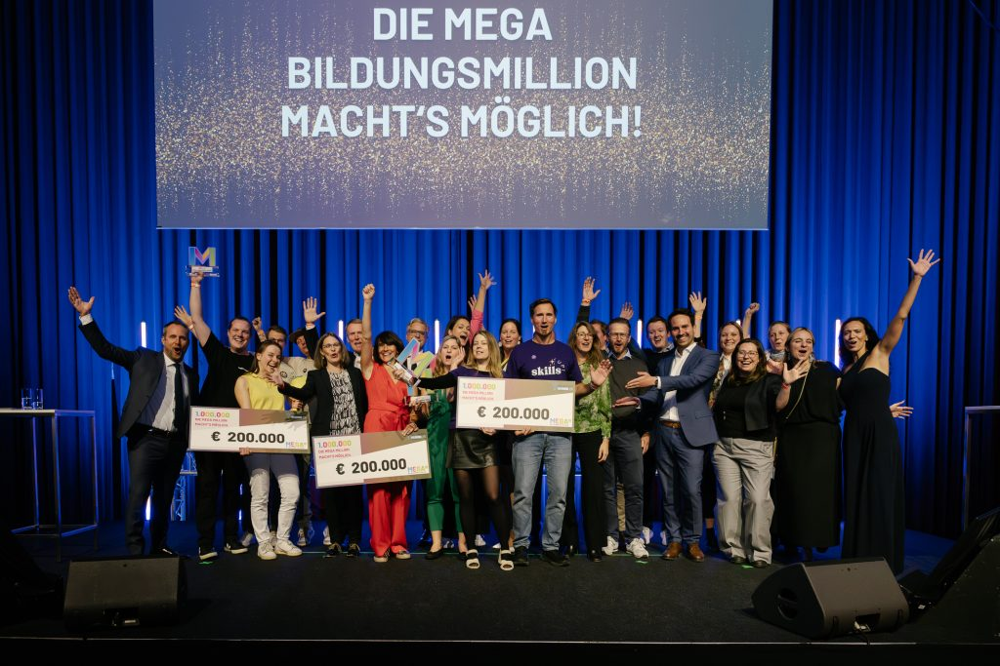
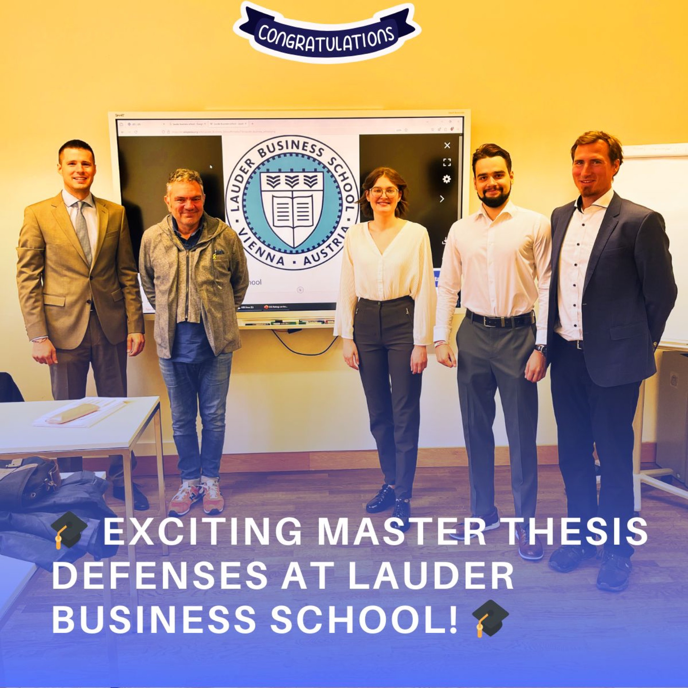
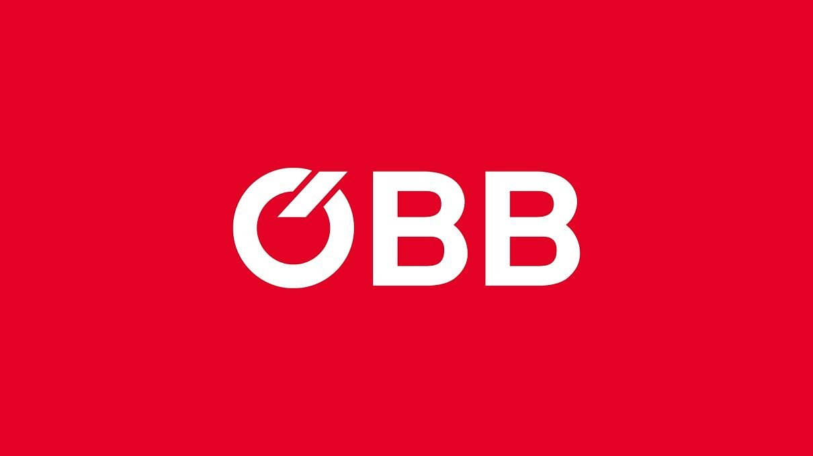
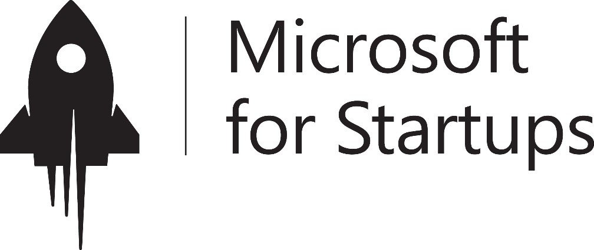
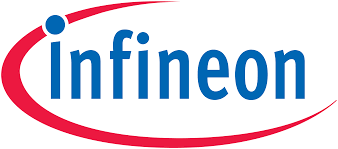
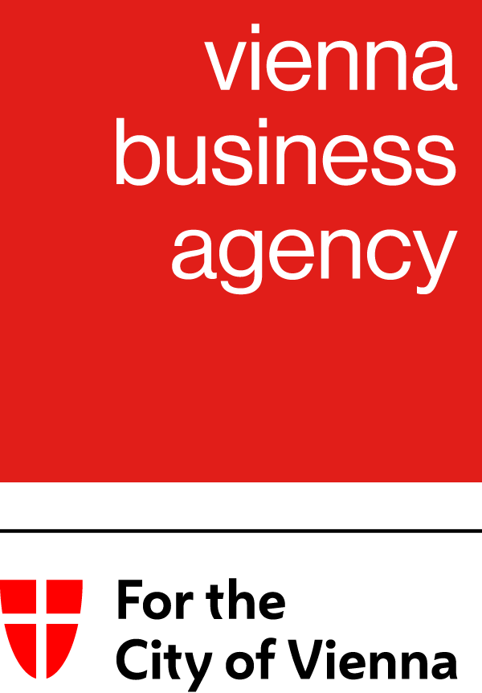
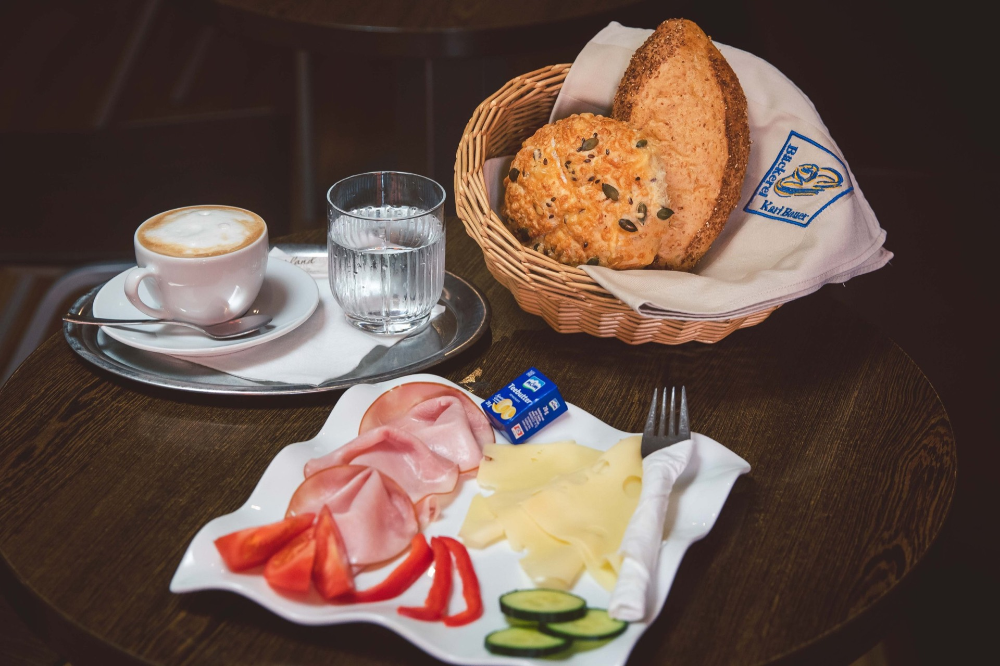
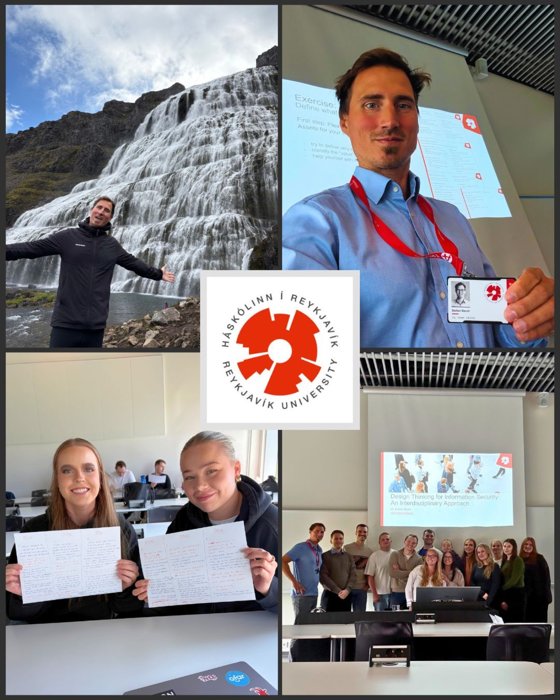
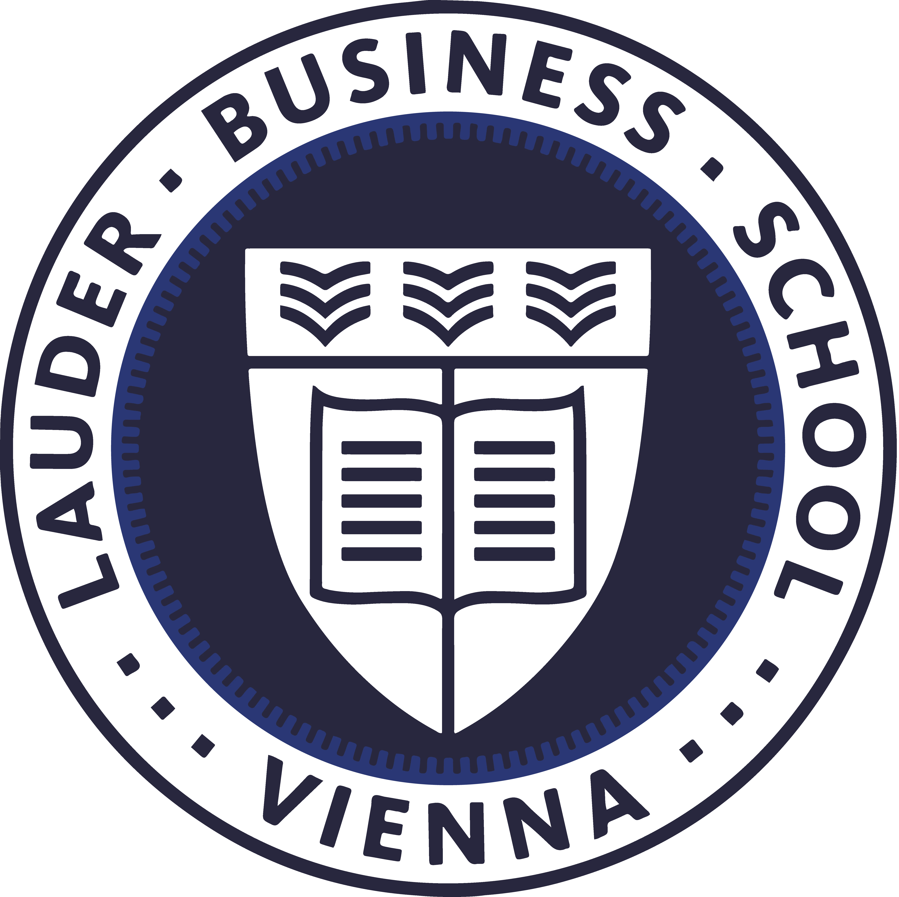
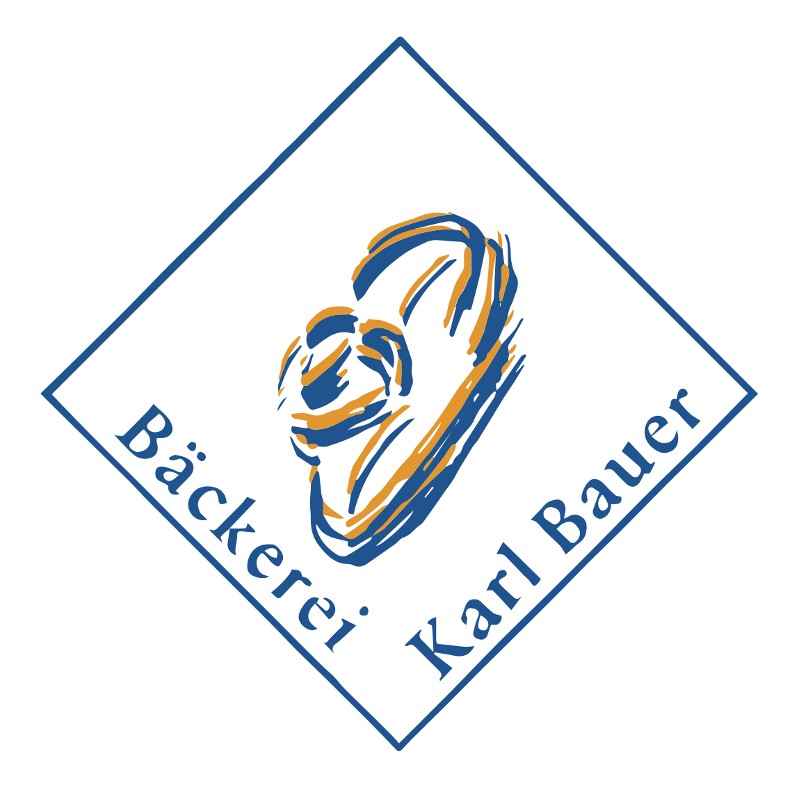

Research without practice is just theory. Practice without research is just guessing. 15 years spent building the bridge between both.
PhD · CEO & Co-Founder Sustainista · Endowed Professor · AI Builder · Hackathon Organizer
Dr. Stefan Bauer — Course Introduction · Vienna, Austria

Pitch·Win·Scale
Entrepreneur · Innovator · Startup Founder
€200.000 Pitch Award
From idea to funding — Skills-UP! won Austria's largest education award among 80+ national initiatives. A peer-to-peer financial literacy platform proving that bold ideas, strong pitches, and consistent execution create real impact.
Austria's most prestigious education award, selected by an expert jury and public vote. Skills-UP! reached 200+ apprentices and achieved lasting behavior change in 90% of participants. As a founder, innovator, and entrepreneur, I think in products — and I build them.
€200kPitch Award Won
80+Initiatives Beaten
3×Startup Founder
FFGFlagship Project Lead
Skills-UP! Team on stage at MEGA Education Million 2025 — €200,000 Pitch Award · TOP 3 of 80+ national initiatives · Dr. Stefan Bauer as Founder & Innovator

Finance·AI·Leadership
Endowed Professor · City of Vienna
Professor for Finance, ESG & AI
Appointed by the City of Vienna as Endowed Professor for Finance, ESG & AI. Teaching at 10+ universities — WU Vienna, TU Vienna, Lauder Business School, FH WKW, Aarhus University, Reykjavik University and more. 620+ academic citations, awarded twice for Outstanding Research at WU.
10+Universities worldwide
620+Academic citations
2×WU Outstanding Research
PhDInformation Systems, WU
Lauder Business School, Vienna — Stiftungsprofessur der Stadt Wien · Professor for Finance, ESG & AI · Dr. Stefan Bauer
Research·Practice·Leadership
620+academic citations
10+universities
15+years experience
6,333LinkedIn followers
About Me
Research & Teaching
→ PhD Information Systems, WU Vienna
→ Endowed Professor, City of Vienna — Finance, ESG & AI
→ Lecturer at 10+ universities worldwide
→ 620+ academic citations
→ WU Outstanding Research Award (awarded twice)
→ ERSTE Bank Research Prize CEE 2012 — €17,880
→ #1 Business Graduate, University of Vienna 2010
Entrepreneurship & Innovation
→ CEO & Co-Founder, Sustainista GmbH
→ Vice-Chair, Association for Digital Future Education
→ Managing Director, Bäckerei Karl Bauer GmbH
→ Organizer, Europe Tech Hackathon @ ViennaUP
→ Work Package Lead — Erasmus+ L2BGreen (€1.5M)
→ Work Package Lead — FFG Flagship PACE-DPP
→ IPMA Level D certified · OekoBusiness Vienna
Sustainista — CEO & Co-Founder
AI-powered ESG automation for enterprises
Digital Product Passport (EU Battery & Ecodesign Regulation)
Product Carbon Footprint (Scope 1, 2 & 3)
FFG Flagship PACE-DPP — Work Package Lead
Partner at dpp-austria.at
OekoBusiness Vienna — ESG & SDG Consultant
Partners & Clients




Teaching — 10+ Universities
WU Vienna · TU Vienna · Modul University Vienna
FH Technikum · FH WKW · FH Wiener Neustadt
Reykjavik University 🇮🇸 · Aarhus University 🇩🇰
HSE Moscow · IDC Herzliya · Lauder Business School
IT Innovation & User Research Lead — Wüstenrot Technology GmbH
User research for mobile apps & web platforms, IT innovation management.
2021 – Present
Co-Founder & Vice Chairman — Verein zur Entwicklung digitaler Zukunftsbildung
Skills-UP! peer-to-peer financial literacy platform. ERASMUS+ Lead. TOP 3 MEGA Education Million 2025.
2019 – 2021
Innovation School Director — Talent Garden AT GmbH
B2B corporate innovation programs and academic study programs. Digital learning experience design.
2016 – 2019
Head of User Experience — BAWAG P.S.K.
Led UX team in agile platform development at one of Austria's largest banks. Customer journey mapping, prototyping, app design.
2011 – 2016
Research & Teaching Associate — WU Wien (IS & Operations)
PhD research in Digital Innovation & Information Security. International teaching exchanges: Aarhus, Prague. Elected Chairman of Doctoral Students.
2010
Merit Scholarship — #1 in Business, University of Vienna
Ranked first in the Business faculty. Merit-based scholarship awarded.
🎓
Finance·Peers·Change
Featured Project · Financial Education
Skills-UP! — Financial Literacy for Apprentices
Skills-UP! brings financial education where it's needed most: directly into Austrian vocational schools. Real apprentices guide their peers through savings goals, debt traps, crypto basics, and emergency budgets — using gamification, quiz battles, podcasts, and peer-made videos. 90% of participants report lasting behavioral change. Built from scratch, scaled nationally, awarded Austria's most prestigious education prize.
🏆
TOP 3 — MEGA Education Million 2025 · €200,000
Austria's most prestigious education award. Selected from 80+ national initiatives by expert jury and public vote. One of three finalists in Austria.
The future of business is digital, sustainable, and regulated. We build the infrastructure for it — AI-automated ESG reporting and EU-compliant Digital Product Passports. This is where the future lies.
Sustainista automates ESG reporting and builds EU-compliant Digital Product Passports (EU Battery Regulation, Ecodesign). As Work Package Lead in FFG Flagship PACE-DPP — a €3M project with 13 partners — we drive Austria's circular economy forward. Product Carbon Footprint (Scope 1–3), fully AI-powered.
Work Package Lead · Project Director · EU Research
Leading Projects That Matter
Work Package Lead in FFG Flagship PACE-DPP (€3M, 13 partners) and Erasmus+ L2BGreen (€1.5M, 8 countries). Organizer of the Europe Tech Hackathon @ ViennaUP — 200+ participants, partners including Anthropic, OpenAI, Google and AWS. From EU research consortia to national innovation programs — leading cross-functional teams, managing budgets, delivering results.
€4.5M+Project volume led
21+Project partners
8Countries, Erasmus+
200+Hackathon participants
Europe Tech Hackathon @ ViennaUP — Dr. Stefan Bauer · Work Package Lead FFG PACE-DPP & Erasmus+ L2BGreen · 21+ partners across 8 countries

Tradition·Transform·Lead
Managing Director · Bäckerei Karl Bauer GmbH
Managing Director Family Business
Nearly 5 years as Managing Director of a traditional Viennese family business — 80 employees, multiple locations. Driving digital transformation, modernising HR systems, financial controlling, and operational processes. Combining entrepreneurial thinking with hands-on management in one of Austria's most demanding sectors.
80Employees
5Years as MD
DigitalTransformation
Finance& Operations
Bäckerei Karl Bauer GmbH, Vienna — Dr. Stefan Bauer · Managing Director · 80 Employees · Digital Transformation & Finance

Measure·Publish·Impact
Quantitative & Qualitative Research · PhD Information Systems
620+ Academic Citations
PhD in Information Systems from WU Vienna. Research spanning digital innovation, information security, fintech, and behavioral economics. Published in leading international journals — cited 620+ times, awarded twice for Outstanding Research at WU, and recipient of the ERSTE Bank Research Prize CEE 2012 (€17,880). Elected Chairman of Doctoral Students, WU Vienna.
620+Academic citations
2×WU Outstanding Research
€17.880ERSTE Bank Prize CEE
PhDInformation Systems, WU
Dr. Stefan Bauer · PhD Information Systems, WU Vienna · 620+ Citations · 2× Outstanding Research Award · ERSTE Bank Research Prize CEE 2012
Teach·Connect·Inspire
International Teaching · Guest Lectures · MBA & Executive Education
Teaching Across Borders
Guest professor and lecturer in Iceland, Austria, and across Europe. MBA programs, executive education, and university lectures covering Finance, AI, Entrepreneurship, and Digital Innovation — from Reykjavik University to WU Vienna and the Lauder Business School. Teaching that bridges theory and hands-on practice.
IS · AT · EUCountries
MBA& Executive Ed
FinanceAI · Entrepreneurship
WULBS · Reykjavik U
Reykjavik University, Iceland 🇮🇸 — Dr. Stefan Bauer · MBA & Master Students · Finance, AI & Digital Innovation · International Guest Lecturer
Contact
Get in Touch
Professor · Founder · Researcher · Vienna, Austria
Green entrepreneurship needs people, not just policies. We built Europe's open curriculum for it across 7 countries. €1.5M, one shared mission, real-world impact by 2027.
L2BGreen is an Erasmus+ initiative I co-lead — equipping people across Europe with the skills for green entrepreneurship. The project builds an interactive online course, an AI chatbot for real-world case studies, and a Europe-wide community network. I serve as Work Package Lead and co-founder of the technology partner building the AI chatbot component.
🇪🇺 Erasmus+ · €1,499,148 EU FundingApril 2024 – March 20277 CountriesDE · EN · NL · EE · EL · SLAI Chatbot for Green EntrepreneurshipUniversity of Twente · TU Graz · Saarland · Estonian Business School
I don't just teach project management — I live it. As Work Package Lead on major EU and national research projects, I manage multi-million euro budgets, international consortia, regulatory complexity, and stakeholder alignment across academia, government, and industry. These real-world experiences feed directly back into my courses — so students learn what actually matters in practice.
~€3M
Total managed project volume
Across EU Erasmus+, FFG Flagship, and national education programs
3Major Projects
7Countries
10+Partners
IPMALevel D Cert.
🇪🇺 Erasmus+ · EU-Funded
L2BGreen — Green Entrepreneurship
€1,499,148
Work Package Lead in a 7-country European consortium. Coordinating course development, an AI chatbot component, and a community platform — in 6 languages, with partners including University of Twente, TU Graz, Saarland University, and Estonian Business School.
Timeline: April 2024 – March 2027 (36 months)
7 partner countries · 6 languages (DE, EN, NL, EE, EL, SL)
My role: WP Lead + Co-Founder of technology partner (AI chatbot)
Deliverables: Online course, AI chatbot, community network
🇦🇹 FFG Flagship · National Funded
PACE-DPP — Digital Product Passport
~€1.5M
Work Package Lead in a prestigious FFG Flagship Project focused on building the data infrastructure for Digital Product Passports under EU regulation. Coordinated by Virtual Vehicle Research GmbH, funded by the Austrian Federal Ministry for Climate Action (BMK).
Partners: Virtual Vehicle, industrial and research consortia
My role: WP Lead, Sustainista as industrial partner
Focus: Circular economy data spaces, Digital Twins, DPP ecosystems
Outcome: Tooling for EU Battery & Ecodesign Regulation compliance
🏆 MEGA Education Million
Skills-UP! — Financial Literacy
TOP 3 Grant
Led the development and rollout of Skills-UP! — from concept to national award recognition. Built the platform, the corporate partnership model (TGW Logistics), and the ERASMUS+ follow-up project as Work Package Lead for the AI & Entrepreneurship module.
Platform launched 2020 · Corporate rollout 2021
200+ apprentices · 90% behavioral change
Selected TOP 3 from 80+ national initiatives
ERASMUS+ follow-up: AI & Entrepreneurship WP Lead
🎓 University Teaching
Project Management Courses
Since 2011
Teaching Project Management at university level for 15+ years — bringing real project experience directly into the classroom.
IT Project Management — WU Wien (Bachelor, since 2011)
IS Project & Risk Management — WU Wien (Master, 2018–2021)
Business Project Management — WU Wien (Master, 2021–2025)
IT Innovation Management — FH Technikum (Master, since 2021)
Certification: IPMA Level D (pma Austria)
6 Learnings from ~€3M managed
🔍
Define "Done" Before You Start
In L2BGreen and PACE-DPP, each deliverable had a formal acceptance criterion. Without that, every output becomes a negotiation. Write your definition of done on day one.
🤝
Trust is Built Before it's Needed
Seven partner teams across Europe, never in the same room. Investing in relationship-building in month 1 paid dividends in crisis months 18 and 24.
🚦
Status Reports Nobody Reads Are Noise
I switched from weekly text updates to a simple RAG dashboard. Response rate doubled. Short, visual, actionable beats long, text-heavy, informational every time.
🔧
Change Requests Aren't Failure
Formally requesting a change to scope or timeline is a professional process — not a sign the project is failing. What kills projects is managers who hide drift instead of surfacing it.
🧪
Prototype Early, Validate with Users
In Skills-UP!, we tested with real apprentices before scaling. Assumptions about what users need are almost always wrong until tested. Build-measure-learn works in EU projects too.
🤖
AI Cuts Coordination Overhead by ~30%
Status summaries, stakeholder drafts, risk pattern recognition — AI handles these now. The bottleneck shifts to decision-making. That's exactly where human judgment belongs.
Aarhus University · HSE Moscow · IDC Herzliya · Prague University of Economics
Inspire·Global·Connect
🇮🇸 Reykjavik University · MBA / Master
Teaching Internationally
Great teaching comes from practice, not theory. I bring EU projects, hackathons, and startup experience directly into every classroom. Students leave ready to build — not just to present.
Design Thinking: An Interdisciplinary Perspective — taught in English for MBA and Master students at Reykjavik University, Iceland. Live workshops, group work, rapid prototyping. Students build real solutions in intensive hands-on sessions. One of the few courses that connects Design Thinking directly with information security and AI — bridging academia and applied innovation.
🇮🇸Reykjavik, Iceland
MBAMaster & MBA level
ENTaught in English
10+Universities worldwide
Reykjavik University — Design Thinking: An Interdisciplinary Perspective · Teaching MBA & Master students · Iceland 🇮🇸
Mentor·Challenge·Graduate
🎓 Lauder Business School · Vienna
Master Thesis Defenses
Real academic accountability means defending your work in front of people who will challenge it. I supervise and examine Master theses at LBS Vienna. The moment where theory meets its test.
Thesis supervisor and examiner at Lauder Business School Vienna. Students present their research, defend methodology and results before the committee — challenged to the standard of real academic practice. Banking Simulation and applied management research at Master level. The moment where theory meets accountability.

Lauder Business School
MasterThesis supervision
ViennaAustria
Lauder Business School Vienna — Master Thesis Defense · Dr. Stefan Bauer als Prüfer & Betreuer 🎓
Challenge·Build·Ship
🚀 ViennaUP · European Tech Hackathon
Teaching Through Hackathons
Real entrepreneurship cannot be taught from a textbook. 48 hours from idea to pitch, under real competitive pressure. The best learning happens when failure has consequences.
Real entrepreneurship cannot be taught from a textbook. At ViennaUP's European Tech Hackathon, students and founders work under pressure — 48 hours from idea to pitch. Best Team Spirit Award. Best European Idea Award. €1.000 prizes. This is where classroom theory collides with reality, and the best learning happens under pressure.
48hIdea to pitch
🏆Multiple awards
EUEuropean teams
ViennaViennaUP festival
ViennaUP European Tech Hackathon — Best Team Spirit Award & Best European Idea Award · Teaching Entrepreneurship in Practice 🚀
Family·Craft·Community

🥐 Bäckerei Karl Bauer GmbH · Vienna
Family Business. Viennese Craft.
A family business is not a business — it is a promise. Bäckerei Karl Bauer has kept that promise for over 30 years in Vienna. Quality ingredients, artisan craft, and community at the heart of everything.
As Managing Director of Bäckerei Karl Bauer GmbH, I bridge traditional Viennese baking craftsmanship with modern business management. From Kaffeehaus culture to artisan bread — we serve Vienna's neighborhoods with quality and care. Led by a team that treats every customer like family.
Bäckerei Karl Bauer GmbH · Kaffeehaus Wien · Managing Director Dr. Stefan Bauer 🥐
AI·ESG·Finance
Endowed Professorship · City of Vienna
Finance, ESG & Artificial Intelligence
The City of Vienna invests in people who bridge research, business, and society. As Endowed Professor, I bring AI-driven finance and ESG literacy to the next generation. This chair is not just an honor — it is a mandate to build what matters.
The City of Vienna awards endowed professorships to individuals who bridge research, business, and societal relevance. As Endowed Professor, I bring together my experience in ESG automation (Sustainista), financial literacy (Skills-UP!), and 15+ years of university teaching — with a clear focus on AI-driven financial analysis and sustainable corporate governance.
ViennaCity of Vienna Endowment
AIArtificial Intelligence
ESGSustainability Reporting
FinanceFinancial Management
🏛
Endowed Professor, City of Vienna
Awarded for outstanding integration of research, entrepreneurial practice, and societal impact. Finance · ESG · AI — at the intersection of academia and business.
Publications · 620+ Citations
Peer-reviewed work in top-tier journals. Full list on Google Scholar.
1
From Information Security Awareness to Reasoned Compliant Action
Bauer & Bernroider · DATA BASE for Advances in Information Systems · 2017
Journal Article
2
Designing Information Security Awareness Programs to Overcome Non-Compliance in Banks
Join 6,333+ professionals following my work on AI, sustainability, and innovation. I share regular insights on ESG, EdTech, startup building, and the future of learning.